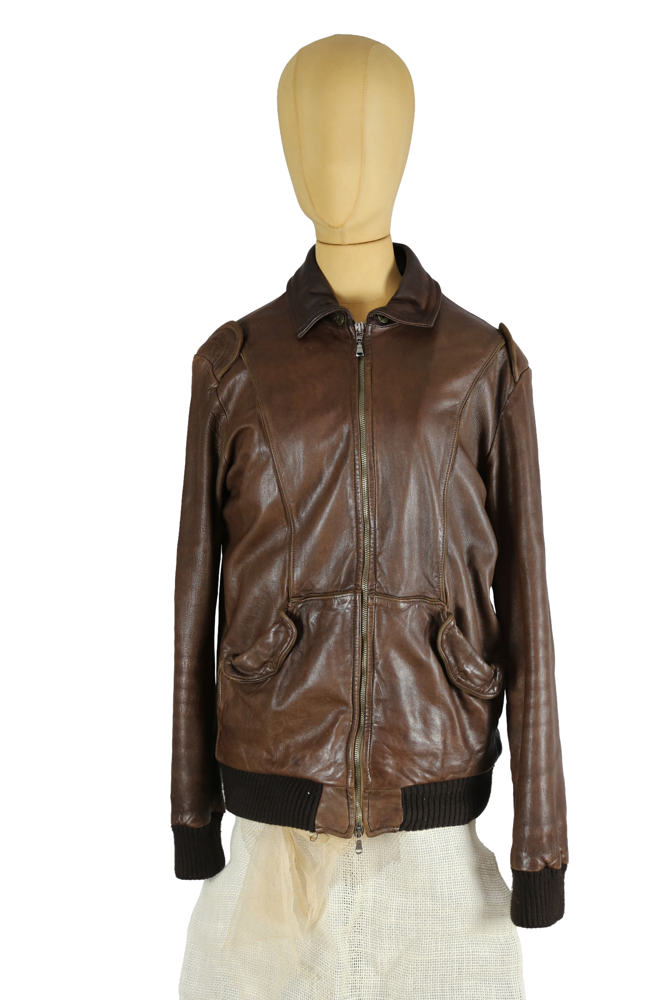

1 / 12Aus dem kuratierten Archiv von Disorder119. Klassisch geschnittene Lederjacke von Giorgio Brato in warmem Braunton mit ruhiger, zeitloser Ausstrahlung. Das weiche, fein verarbeitete Glattleder zeigt eine natürliche Oberflächenstruktur mit dezenter Patina, die dem Piece Tiefe und Charakter verleiht. Der Schnitt ist klar und körpernah, ohne einzuengen, mit leicht taillierter Linienführung. Gerippte Bündchen an Saum und Ärmeln sorgen für eine harmonische Balance zwischen Funktion und Form. Dezente Schulterpartien, seitliche Eingrifftaschen und ein durchgehender Reißverschluss unterstreichen die zurückhaltende, handwerklich geprägte Ästhetik. Ein reduziertes Essential, das auf langlebige Qualität und klassische Tragbarkeit setzt. Details: Marke: Giorgio Brato Farbe: Braun Größe: One Size Passform: Körpernah geschnitten Verschluss: Reißverschluss Material: Echtleder Herstellungsland: Italien Fotografie & Passform: Das Kleidungsstück wurde auf unserer Standard-Schneiderpuppe fotografiert, die wir zur konsistenten Darstellung aller Kleidungsstücke verwenden. Maße der Schneiderpuppe: Brustumfang 89 cm Taillenumfang 66 cm Hüftumfang 89 cm Schulterbreite 38 cm Diese Maße dienen ausschließlich der visuellen Einordnung und werden nicht als Artikelmaße bezeichnet. Zustand: Guter gebrauchter Zustand mit leichten, ledertypischen Tragespuren. Rechtliche Hinweise: Verkauf als gebrauchtes Kleidungsstück. Die Beschreibung erfolgt nach bestem Wissen und Gewissen. Farbnuancen und Oberflächenwirkungen können aufgrund von Lichtverhältnissen bei der Fotografie sowie unterschiedlicher Bildschirmdarstellungen leicht vom Original abweichen. Disorder119 steht für sorgfältig kuratierte Designerstücke mit Fokus auf Authentizität, Qualität und zeitlose Relevanz.
Disorder119 · Kuratiertes Archiv für Designer-, Vintage- und Contemporary-Mode. Jedes Stück wird einzeln ausgewählt, fotografiert und beschrieben.